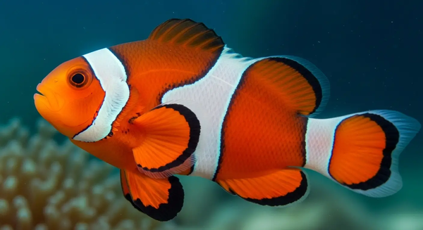
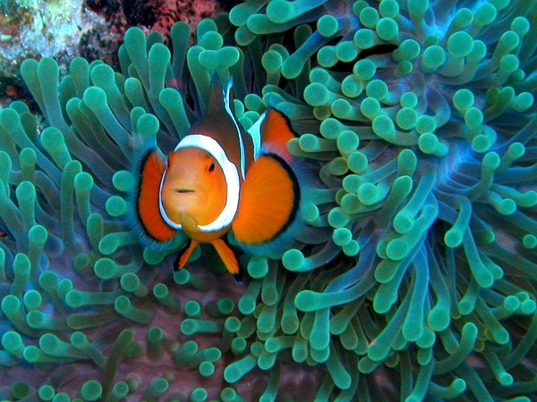

É um gênero de peixes pequenos que inclui mais de 30 espécies. São famosos devido à relação ecológica de protocooperação que estabelecem com as anémonas-do-mar ou, em alguns casos, com corais. As anémonas providenciam-lhes abrigo, apesar dos tentáculos urticantes aos quais são imunes, devido à camada de muco que os reveste. O peixe-palhaço esconde-se dos predadores nas anémona. Na base das mesmas, botam seus ovos, assegurando a proteção de sua prole. Em retorno, os restos do alimento do peixe-palhaço são utilizados pela anémona. Uma associação que beneficia os dois parceiros.
Os peixes-palhaço estão desaparecendo, pois as anêmonas são extremamente sensíveis as mudanças climáticas, lhes causando o embranqueamento, e consequentemente fazendo com que os peixes percam seu habitat.

